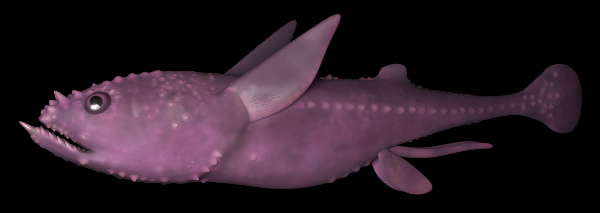
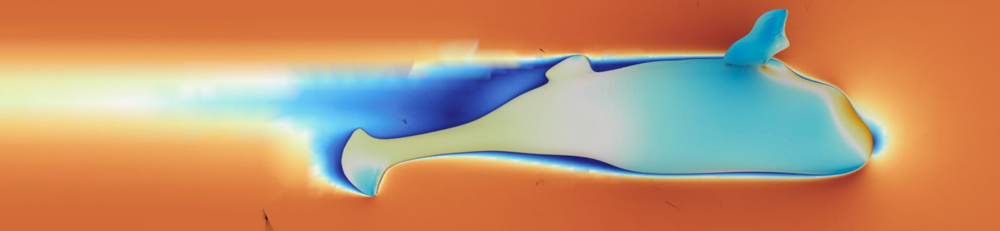
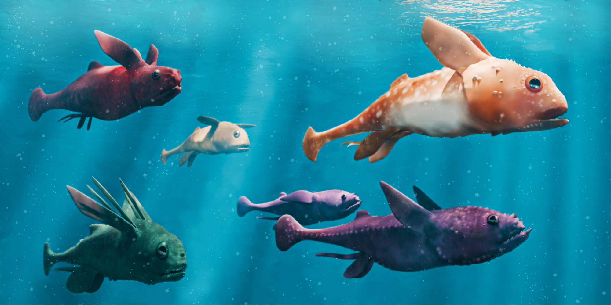

Functional morphology and swimming performance of iniopterygian holocephalans

Overview
This project investigated the functional morphology and hydrodynamic performance of iniopterygian holocephalans, extinct Carboniferous cartilaginous fishes characterized by dorsally inserted pectoral fins. The aim was to test functional and ecological hypotheses explaining this unusual morphology, using extant chimaeras as comparative models.
Methods
Fossil specimens were CT scanned and segmented using Amira. Based on these data, along with published reconstructions, 3D digital body models were generated in Blender. Comparative chimaera models were produced following the same workflow from CT data. Computational fluid dynamics (CFD) simulations were then conducted in OpenFOAM to quantify hydrodynamic performance under different fin configurations.

Results
Results indicate that dorsal pectoral fin insertion enhances lift production, supporting efficient vertical movement and suggesting a mid-water ecological niche. In contrast, chimaera morphology appears better suited to benthic stabilization strategies. This integrative approach—combining virtual paleontology, 3D modeling, and CFD, provides quantitative evidence for ecological differentiation among early holocephalans and offers new insights into the evolution of locomotion in cartilaginous fishes.
